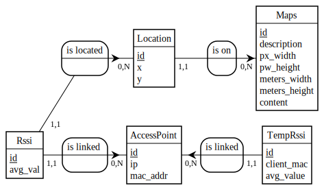

<!doctype html>
<html lang="en">

<head>
<meta charset="utf-8">

<title>reveal.js - The HTML Presentation Framework</title>

<meta name="description" content="Description non affichée">
<meta name="author" content="Autheur non affiché">

<meta name="apple-mobile-web-app-capable" content="yes" />
<meta name="apple-mobile-web-app-status-bar-style" content="black-translucent" />

<meta name="viewport" content="width=device-width, initial-scale=1.0, maximum-scale=1.0, user-scalable=no">

<link rel="stylesheet" href="css/reveal.min.css">
<link rel="stylesheet" href="css/theme/default.css" id="theme">

<!-- For syntax highlighting -->
<link rel="stylesheet" href="lib/css/zenburn.css">

<!-- If the query includes 'print-pdf', include the PDF print sheet -->
<script>
if( window.location.search.match( /print-pdf/gi ) ) {
    var link = document.createElement( 'link' );
    link.rel = 'stylesheet';
    link.type = 'text/css';
    link.href = 'css/print/pdf.css';
    document.getElementsByTagName( 'head' )[0].appendChild( link );
}
</script>

<!--[if lt IE 9]>
                <script src="lib/js/html5shiv.js"></script>
                <![endif]-->
</head>

<body>

<div class="reveal">

    <!-- Any section element inside of this container is displayed as a slide -->
    <div class="slides">

        <section data-markdown>
            <script type="text/template"> 

# LO53 Project

Thomas GAGNERET

Stéphane PARUNAKIAN

Tao SAUVAGE

            </script>
        </section>

        <section data-markdown>
            <script type="text/template">

## Summary

- Access Points
- Positioning server
- Android

            </script>
        </section>

        <section data-markdown>
            <script type="text/template">

## Positioning server

- Database (PostgreSQL)
- Servlets (TomCat 7, Json Simple)
    - Calibration
    - Localisation

            </script>
        </section>

       <section data-markdown>
            <script type="text/template">

## Database

PostgreSQL



            </script>
        </section>

        <section data-markdown>
            <script type="text/template">

## Database

Filling the database

- Manually
- Maps table : Python script

            </script>
        </section>

        <section data-markdown>
            <script type="text/template">

## Communication Servlets/Database

- PostgreSQL connector
- Data Access Object
    - Servlet <-> DAO1 <-> Database
    - Servlet <-> DAO2 <-> XML

            </script>
        </section>

        <section data-markdown>
            <script type="text/template">

## Servlets

- Handle requests from mobile devices
- Retrieve RSSI information from APs
- Store useful information in database

            </script>
        </section>

        <section data-markdown>
            <script type="text/template">

 
## Servlets

Configuration file :
```
# Database
url = jdbc:postgresql://localhost:5432/lo53_rssi
user = lo53
password = lo53

# Access points port
ap_port = 8080

# Access points timeout (ms)
ap_timeout = 500

# Minimum number of Access Points needed
min_ap = 1

# Minimum number of samples sent by the Access Points needed
min_samples = 1

# Minimum number of temporary RSSI measurements needed
min_measurements = 1
```

            </script>
        </section>

        <section data-markdown>
            <script type="text/template">
## Android 


- Setup tool
    - Used to set calibration points
- Positioning
    - Used to locate user

            </script>
        </section>

        <section data-markdown>
            <script type="text/template">
##Settings 


            </script>
        </section>

        <section data-markdown>
            <script type="text/template">

## Setup tool 


            </script>
        </section>

        <section data-markdown>
            <script type="text/template">

## Positioning


            </script>
        </section>

    </div>

</div>

<script src="lib/js/head.min.js"></script>
<script src="js/reveal.min.js"></script>

<script>

// Full list of configuration options available here:
// https://github.com/hakimel/reveal.js#configuration
Reveal.initialize({
controls: true,
progress: true,
history: true,
center: true,

theme: Reveal.getQueryHash().theme, // available themes are in /css/theme
transition: Reveal.getQueryHash().transition || 'default', // default/cube/page/concave/zoom/linear/fade/none

// Parallax scrolling
// parallaxBackgroundImage: 'https://s3.amazonaws.com/hakim-static/reveal-js/reveal-parallax-1.jpg',
// parallaxBackgroundSize: '2100px 900px',

// Optional libraries used to extend on reveal.js
dependencies: [
{ src: 'lib/js/classList.js', condition: function() { return !document.body.classList; } },
{ src: 'plugin/markdown/marked.js', condition: function() { return !!document.querySelector( '[data-markdown]' ); } },
{ src: 'plugin/markdown/markdown.js', condition: function() { return !!document.querySelector( '[data-markdown]' ); } },
{ src: 'plugin/highlight/highlight.js', async: true, callback: function() { hljs.initHighlightingOnLoad(); } },
{ src: 'plugin/zoom-js/zoom.js', async: true, condition: function() { return !!document.body.classList; } },
{ src: 'plugin/notes/notes.js', async: true, condition: function() { return !!document.body.classList; } }
]
});

</script>

</body>
</html>
